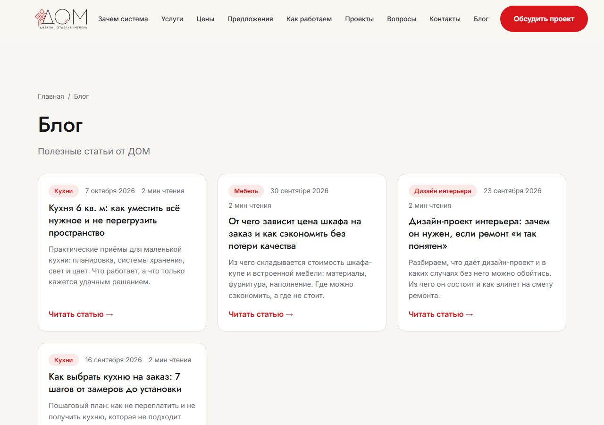
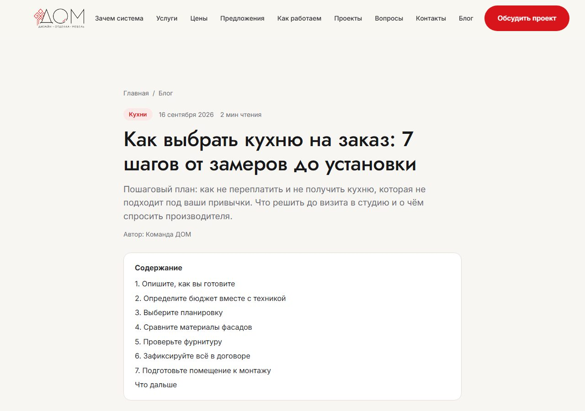

Продвижение — это не «поставили галочку», а большой объём работы каждую неделю. Вот что мы берём на себя, чтобы сайт начал приводить заявки из поиска.
12+статей за первые 3 месяца
3карты: Яндекс, 2ГИС, Google
3сервиса поиска подключаем
1 разв месяц отчёт о результатах
1
Находим, что ищут ваши клиенты
дни 1–3
Собираем список реальных поисковых запросов по вашим услугам и городу.
Делим их по смыслу и распределяем по страницам сайта: каждая услуга получает свою.
Отсеиваем запросы, которые приводят «просто посмотреть», и оставляем те, что приводят к заявкам.
2
Настраиваем сайт под поиск
дни 3–5
Прописываем заголовки и описания страниц, которые видны в выдаче Яндекса и Google.
Создаём карту сайта и подключаем Яндекс Вебмастер, Google Search Console и Bing, чтобы поисковики быстро нашли каждую страницу.
Проверяем скорость загрузки и удобство на телефоне.
Настраиваем переадресацию со старого адреса на новый, чтобы ничего не потерялось.
3
Пишем статьи и ведём блог
каждую неделю
Статьи отвечают на вопросы ваших клиентов. Человек ищет «как выбрать», «сколько стоит», «что лучше», приходит на статью, читает и становится вашим клиентом.
Блог на одном из наших сайтов

Пример: так выглядит блог, который мы делаем для сайта.
Страница статьи с оглавлением

Каждая статья оформлена одинаково: заголовок, краткое описание, оглавление, автор.
Статья от 1 800 слов под конкретный запрос, не «вода».
Статья сама попадает в карту сайта и отправляется поисковикам на индексацию.
Вам приходит уведомление в Telegram, и остаётся нажать кнопку «Опубликовать».
Для Дзена и vc.ru готовим отдельную версию статьи, чтобы привлекать читателей и с этих площадок.
4
Оформляем карточки на картах
дни 5–8
Люди часто ищут услуги прямо в Яндекс Картах, 2ГИС и Google Картах. Карточка на карте даёт первые обращения быстрее всего.
Готовим название, описание, список услуг, категории и рубрики для всех трёх сервисов.
Пишем тексты под запросы клиентов, а не формальные «о компании».
Составляем схему сбора отзывов и шаблоны ответов на них.
5
Отчитываемся о результатах
каждый месяц
Что покажем
Зачем это вам
Сколько страниц сайта в поиске
Видно, что сайт растёт
По каким запросам вас показывают
Видно, кто вас находит
Сколько человек пришло на сайт
Видно результат работы
Какие статьи и страницы вышли
Видно, что сделано
План на следующий месяц
Видно, куда идём дальше
6
Что остаётся вам
Всю подготовку, тексты, настройки и контент делаем мы. От вас нужно только то, что мы физически не можем сделать за вас:
нажимать «Опубликовать» под готовыми статьями;
подтвердить владение карточками на картах (несколько минут, код приходит вам);
отвечать на заявки: чем быстрее, тем выше шанс договориться.
Результаты в поиске появляются постепенно, обычно через 2–4 месяца. Конкретное место в выдаче и количество заявок мы гарантировать не можем, потому что решают поисковики, но всю работу выполняем в полном объёме.
Начнём с переноса на ваш домен
Напишите слово «домен» в ответ на наше сообщение, и мы начнём.
Остались вопросы? Напишите нам, и мы всё объясним простыми словами.